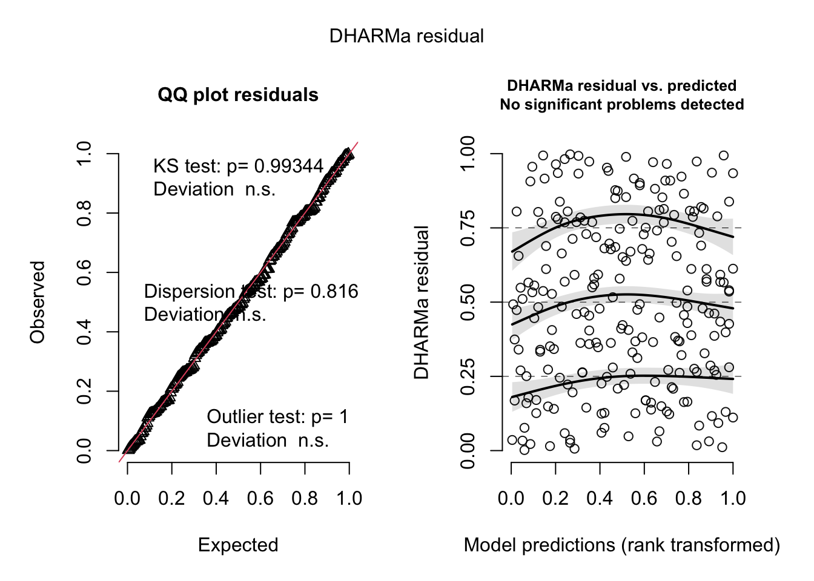

library(tidyverse)
library(lubridate)
library(ggplot2)
library(flextable)
library(gt)
library(here)
library(janitor)
library(dplyr)
library(scales)
library(ggeffects)
library(MuMIn)
library(DHARMa)
sst <- read_csv(here("data", "SST_update2023.csv")) # storing SBC LTER sea surface temp data as an object called sst
nest_boxes <- read_csv(here("data", "occdist.csv")) # storing data for problem 3 as an object called nest_boxesENVS 193DS Spring 2025 Final
Set up
Problem 1. Research writng
a. Transparent statistical methods
In part 1, they used a correlation test, probably Pearson’s r, to asses the relationship between distance from headwaters and nitrogen load. In part 2, they used a one-way ANOVA to compare average nitrogen loads across five sources (urban land, atmospheric deposition, fertilizer, wastewater treatment, and grasslands). The one grouping variable is source type.
b. More information needed
In part 2, we rejected the null hypothesis because the p-value (0.02) is less than the significance level (α = significance level), indicating that average nitrogen load differs by source. However, since ANOVA only tells us that at least one group differs, we need to run a post-hoc test, such as Tukey’s HSD, to identify which specific sources differ significantly. We should also calculate the effect size (η²) to determine how much of the variation in nitrogen load is explained by source type — providing environmental context on whether the differences are negligible, small, medium, or large. It would also be relevant to include group means with confidence intervals, as differences between group means with confidence intervals for differences between group means.
c. Suggestions for rewriting
Part 1: Our results suggest that there is a correlation between between distance from headwater (km) and annual total nitrogen load (kg year^-1). There is a weak/moderate/strong positive/negative relationship between distance from headwater (km) and annual total nitrogen load (kg year^-1) (Pearson’s r, r = correlation coefficient, p = 0.03, ⍺ = significance level).
Part 2: Our results suggest a difference in average nitrogen load (kg year^-1) between sources, with a negligible/small/moderate/large (η^2 = effect size) effect of source, suggesting that some land uses contribute more nitrogen to the San Joaquin River Delta than others. Sources differed in nitrogen load (one-way ANOVA, F(among groups df, between groups df) = F-statistic, p = 0.02, ⍺ = significance level), and pairwise comparisons between sources showed that ____ and ____ sources differed from each other. Generally, nitrogen loads from ____ tend to be smaller/larger than nitrogen loads from ____(___ kg year^-1 smaller/larger, 95% CI: [upper bound, lower bound] kg year^-1).
Problem 2. Data visualization
a. Cleaning and summarizing
#creating a clean data set
sst_clean <- sst |>
#cleaning column names
clean_names()|>
mutate(
date = ymd(date), # making sure date is read as a date
year = year(date), # creating a new column called year, read as a factor
month = month(date) # creating a new column called month, read as a factor
) |>
# keep only data from 2018 and later
filter(year >= 2018) |>
# converting year to a factor with 6 levels
mutate(year = as_factor(year),
year = fct_relevel(year,
"2018",
"2019",
"2020",
"2021",
"2022",
"2023")) |>
# renaming numeric months to full name
mutate(month = case_when(
month == "1" ~ "Jan",
month == "2" ~ "Feb",
month =="3" ~ "Mar",
month == "4" ~ "Apr",
month == "5" ~ "May",
month == "6" ~ "Jun",
month == "7" ~ "Jul",
month == "8" ~ "Aug",
month == "9" ~ "Sep",
month == "10" ~ "Oct",
month == "11" ~ "Nov",
month == "12" ~ "Dec"),
# converting month to an ordered factor with 12 levels
month = factor(month,
levels = c(
"Jan",
"Feb",
"Mar",
"Apr",
"May",
"Jun",
"Jul",
"Aug",
"Sep",
"Oct",
"Nov",
"Dec"),
ordered = TRUE)) |>
# grouping by year and month
group_by(year, month) |>
# creating a new column called mean_monthly_sst, where the mean SST is calculated, and excluding missing values, rounded to one decimal place
summarize(mean_monthly_sst = round(mean(temp, na.rm = TRUE), 1)) |>
# ungroup data frame
ungroup()
# displaying 5 random rows
sst_clean |> slice_sample(n = 5)# A tibble: 5 × 3
year month mean_monthly_sst
<fct> <ord> <dbl>
1 2021 Dec 14.4
2 2018 Aug 19.6
3 2022 Sep 19.3
4 2020 Jun 15.9
5 2023 Jun 16 # structure
str(sst_clean)tibble [72 × 3] (S3: tbl_df/tbl/data.frame)
$ year : Factor w/ 6 levels "2018","2019",..: 1 1 1 1 1 1 1 1 1 1 ...
$ month : Ord.factor w/ 12 levels "Jan"<"Feb"<"Mar"<..: 1 2 3 4 5 6 7 8 9 10 ...
$ mean_monthly_sst: num [1:72] 15 14.3 13.5 12.8 13.6 15.5 18.2 19.6 18.2 18.5 ...b. Visualize the data
# starting with the clean data frame
ggplot(sst_clean,
aes(x = month, # month on the x-axis
y = mean_monthly_sst, # mean monthly sea surface temp on the y-axis
color = year, # color by year
group = year)) + # group by year
# creating a line plot with specified line size
geom_line(linewidth = 1)+
# adding points with a specified size
geom_point(size = 2) +
# customizing color gradient
scale_color_brewer(
palette = "Blues", # blue color gradient
direction = "1" # light to dark
) +
# changing axis and legend titles
labs(
x = "Month", # changing the name of the x-axis
y = "Mean monthly sea surface temperature (°C)", # changing the name of the y-axis
color = "Year" # changing the name of the legend
) +
# changing the theme
theme_minimal() +
theme(
panel.border = element_rect(color = "grey40", fill = NA), # adding a border
panel.grid = element_blank(), # removing the grid
legend.position = c(0.25, 0.75), # changing the position of the legend
# changing the text sizes and colors
legend.title = element_text(size = 14),
legend.text = element_text(size = 10),
axis.text = element_text(size = 10, color = "grey40"),
axis.title = element_text(size = 14),
axis.ticks = element_line(color = "grey40") # adding ticks for the axes
)Problem 3. Data analysis
a. Response variable
The 1s and 0s indicate if a species (sp = swift parrot, cs = common starling, e = empty, tm = tree martin) occupied a nest box. A 1 means the species used the box for nesting, and a 0 means a species did not.
b. Purpose of study
Swift parrots (Lathamus discolor) are endangered and the target species for conservation, while Common Starlings (Sturnus vulgaris) and Tree Martins (Petrochelidon nigricans) are competitors that may exploit the nest boxes. The study aims to determine whether the boxes benefit the intended species or produce perverse outcomes by increasing nesting habitat for non-target competitor species.
c. Difference in “seasons”
Those years/seasons are the summer breeding seasons of 2016 and 2019, when mast tree flowering events triggered Swift parrots to breed at the study area. In 2016, the nest boxes were newly deployed; in 2019, the boxes had been established for 3 years, allowing for non-target species to learn to identify them as a resource.
d. Table of models
4 models total:
| Model number | Season | Distance to forest edge | Model description |
|---|---|---|---|
| 0 | no predictors (null model) | ||
| 1 | X | X | all predictors (full/saturated model) |
| 2 | X | season as the only predictor | |
| 3 | X | Distance to forest edge as the only predictor |
e. Run the models
# model 0: null model
model0 <- glm(
swift_parrot ~ 1, # formula
data = nest_boxes_clean, # data frame
family = "binomial" # binomial distribution
)
# model 1: all predictors
model1 <- glm(
swift_parrot ~ season + edge_distance, # formula
data = nest_boxes_clean, # data frame
family = "binomial" # binomial distribution
)
# model 2: distance from edge
model2 <- glm(
swift_parrot ~ edge_distance,
data = nest_boxes_clean,
family = "binomial"
)
# model 3: season
model3 <- glm(
swift_parrot ~ season,
data = nest_boxes_clean,
family = "binomial"
)f. Check the diagnostics
plot(
simulateResiduals(model1) # residuals look okay for this model
)
plot(
simulateResiduals(model2)
)
plot(
simulateResiduals(model3)
)
plot(
simulateResiduals(model0)
)
g. Select the best model
AICc(model1, # best model: distance from edge + season (lowest AIC)
model2,
model3,
model0) |>
# arranging output in descending order of AIC
arrange(AICc) df AICc
model1 3 226.3133
model2 2 229.6716
model3 2 236.3744
model0 1 238.8318# reference: 2016 seasonThe best model as determined by Akaike’s Information Criterion (AIC) was model 1, where the response variable is presence of swift parrots, and the predictor variables are season and distance from edge.
h. Visualize the model predictions
i. Write a caption for your figure
j. Calculate model predictions
k. Interpret your results
Problem 4. Affective and exploratory visualizations
a. Comparing visualizations
The visualizations represent different data that I collected, in a way. The predictor variable in my affective visualization is the date (on the x-axis), and the response variable is distance ran/walked per day (on the y-axis) - since it is going in chronological order. There is an additional overlay of daily high temperature to demonstrate how temperature might influence the distance I walked/ran. In my exploratory visualizations, one examines distance walked/ran as a function of school day(yes/no), and the other examines distance walked/ran as a function of daily high temperature. All of the response variables are the distance walked/ran, but I use different predictor variables to examine the possible relationships and patterns. In my affective visualization, it is hard to see patterns because the predictor variable is date. Although, the day I walk the least was also the hottest, and the days I walked the most were mild/warm temperatures (which is subjective to my personal beliefs about temperature). In my categorical exploratory visualization, I can see that the median walking/running distance is similar for both school days and non-school days. In my continuous exploratory visualization, I can see that there is a slight increase in walking/running distance as temperature increases - but I have not ran the tests to confirm. However, the day I walked the least was also the hottest - an outlier. These patterns are different between visualizations because they involve different predictor variables. Unfortunately I was sick and did not attend workshop in week 9. I got full points for my affective visualization in homework 3, so I did not make any changes before workshop week 10. To advance this visualization, I would like to recreate it on paper, so that I can make it more aesthetically pleasing.
b. Sharing your affective visualization
Attended week 10 workshop!